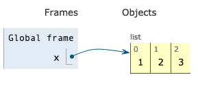
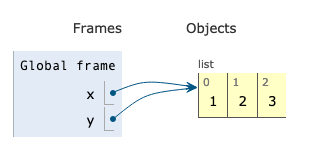
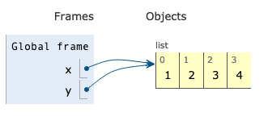
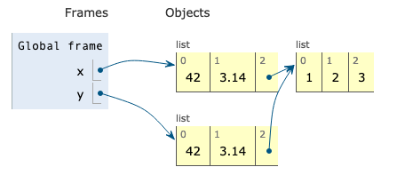

Variables v Objects Exercises¶
To get used to thinking about the distinction between variables and objects, we’re going to look at some Python code and write out what would be happening in Python were we to run the code.
To illustrate, consider teh following block of code:
# Make a new list
x = [1, 2, 3]
# Make new var Y, and assign it x. In R this would make a copy.
y = x
# Add to the end of the string
x.append(4)
If we were to draw out how this code is being executed, we would want to draw three figures, one for each line of code, like this:
x = [1, 2, 3]:

y = x:

x.append(4):

Similarly, we could write a dictionary as:

To help complete these exercises, you can print out copies of code-drawing templates here.
Exercise 1¶
Using the space below, write out, one line at a time, the execution of the following block of code which first creates a dictionary will the names of all the animals in my very small (and weird) zoo:
animals_in_my_zoo = {'Zebras': ['Stripey', 'Black and White'],
'Polar Bears': 'Fluffy',
'Dinosaurs': 'Bitey'}
x = animals_in_my_zoo
x['Meerkat'] = 'Peeps'
Now, given this code, what would the value of animals_in_my_zoo['Meerkat'] be?
Once you’ve gotten an answer, open up Python and run the code to see if you were correct. If not, can you tell why?
Exercise 2¶
Now let’s do a few list manipulations. For these manipulations, you may need to open Python to check the documentation for different functions to figure out whether they mutate the list in-place, or whether they create a new object.
x = [1, 2, 3, 4]
y = x
x.pop(1)
Sketch out this code, and make a prediction for the value of y. Then run the code in Python to check your answer.
Exercise 3¶
Now sketch this code. Again, use Python to check the documentation for sorted if you aren’t sure if it mutates or not.
x = [1, 4, 3, 2]
y = x
sorted(x)
Sketch out this code, and make a prediction for the value of x and the value of y. Then run the code in Python to check your answer.
Exercise 4¶
x = [1, 4, 3, 2]
y = x
x = x.sort()
Now sketch out this code, and make a prediction for the value of x and the value of y. Then run Python to check your answer.
If the result surprises you, you can find some discussion of what likely happened here.
Exercise 5¶
One of the thing that’s very useful about lists, dictionaries, and sets in Python is that they are recursive, meaning a list can contain a list. While powerful, though, this can also be tricky! Let’s draw out the following code:
x = [3.14, 42]
z = {'boring numbers': [1, 2, 3],
'interesting numbers': x}
y = x
y.append(1.618)
Now, what is the value of z['interesting numbers']?
Exercise 6¶
As noted in our tutorial, in general, almost all collections of things in Python are mutable with the exception of tuples. Tuples are, quite simply, immutable lists. Let’s play a little with tuples.
Sketch the following code:
x = [42, -1]
y = (1, 2, x)
x.append(-2)
Write down what you think will be the values of x and y? Now check your answers in Python.
If you got this wrong, you can find discussion of this result here
copy versus deepcopy¶
One of the challenges of the ability of Python collections to hold other collections is that copying can be a little tricky. Consider the following code:
[1]:
x = [42, 3.14, [1, 2, 3]]
y = x.copy()
Naturally, we might think that x and y are now fully independent, but it turns out this is not the case. The reason is that copy copied the arrow from our first list (42, 3.14) to the second list (1, 2, 3), but it did not create an entirely new copy of the second list ([1, 2, 3]).
In other words, it copied the object reference in the first list, not the referenced object itself, which looks like this:

Thus if we modify this second list through x, that change will also be evident in y!
[2]:
y[2].append("where did this come from?!")
x
[2]:
[42, 3.14, [1, 2, 3, 'where did this come from?!']]
If you want not just copy our object references, but also all the referenced objects, we need to do a “deep copy”:
[3]:
import copy
y = copy.deepcopy(x)
which will generate this situation:

Exercise 7¶
Sketch the following code:
x = {'dog_names': ['fido', 'woofer'],
'cat_names': ['fluffy', 'bite-y']}
y = x.copy()
y['dinosaur_names'] = ['big guy', 'super lizard']
y['cat_names'].append('tiger')
What would you get if you ran x['dinosaur_names']?
What would you get if you ran x['cat_names']?
Check your answers with Python.